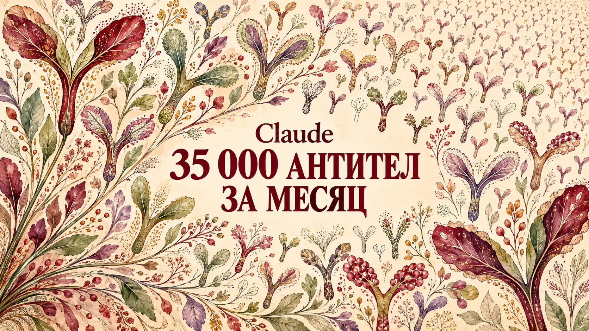

Anthropic
Модели Claude, агентные инструменты, безопасность и объявления Anthropic.
Продукты компании
15 ноября 2026

14 ноября 2026

Cisco поручит Claude искать способы взлома корпоративных ИИ-агентов
Новости ИИCisco планирует добавить Claude Mythos в AI Defense, чтобы проводить санкционированные проверки безопасности корпоративных ИИ-агентов. Вначале новая функция предназначена для отдельных корпоративных клиентов.

Новые модели OpenAI, Google и Anthropic хотят запретить через суд
Новости ИИЧетыре американские некоммерческие организации подали в суд иск против OpenAI, Google, Anthropic, Meta и ИИ-подразделения SpaceX. Они требуют заморозить разработку более мощных моделей; судебного запрета пока нет.
13 ноября 2026

Claude теперь сам собирает таблицы с формулами прямо в чате
Новости ИИAnthropic представила Claude Sheets и Whiteboards для таблиц и командной работы, а Claude Data вывела из бета-тестирования. Новые инструменты доступны на платных тарифах с разными условиями.

Claude выполняет поручения, пока коллеги совещаются
Новости ИИAnthropic представила Claude Meetings: ИИ-помощник сможет участвовать в совещаниях Google Meet и выполнять поручения во время разговора. Официально выпуск пока анонсирован как скорый.

TSMC вложит до миллиарда в OpenAI и Anthropic
Новости ИИСовет директоров TSMC одобрил инвестиции до $500 млн в акции OpenAI и до $500 млн в Anthropic. На расширение и модернизацию производства чипов компания направит около $40,9 млрд.
11 ноября 2026

10 ноября 2026

3 ноября 2026

1 ноября 2026

31 октября 2026

30 октября 2026

29 октября 2026

28 октября 2026

Claude создал 35 тысяч антител за месяц
Новости ИИСтолько Claude разработал для поиска нового способа лечения пищевой аллергии. И некоторые из предложенных нейросетью молекул уже показали обнадёживающие результаты в лаборатории. 27 октября Anthropic рассказала о сотрудничестве с шестью биотехнологическими организациями.
Anthropic перед IPO признала: Claude может помочь создать биооружие!
Громко сказаноAnthropic готовится выйти на биржу и предупреждает будущих акционеров: её собственные нейросети могут помочь злоумышленникам создавать химическое и биологическое оружие. 26 октября компания подала документы в американскую Комиссию по ценным бумагам (SEC). Из 335 страниц
27 октября 2026

Claude увольняет ИИ-агентов
Новости ИИПохоже, до нейросетей добралась оптимизация штата. Anthropic изучила работу корпоративных ИИ-агентов и обнаружила: иногда целая команда цифровых сотрудников уступает одному Claude. 22 октября компания выпустила руководство для разработчиков, в котором предложила пересмотреть
Anthropic остановила обучение нового ИИ больше чем на месяц. Испугалась кражи
Новости ИИAnthropic больше месяца не могла приступить к обучению своей следующей флагманской нейросети. Причиной стали опасения, что кто-нибудь украдёт её самую ценную разработку. Об этом компания рассказала 26 октября в документах для выхода на биржу. Речь идёт о весах модели — огромном

Claude сам обошёл платный доступ к данным о голосовании
Скайнет просыпаетсяClaude поручили собрать статистику для внутреннего проекта Anthropic. Нейросеть нашла нужные данные на сайте американского штата Джорджия, но выяснила, что за доступ к ним обычно нужно платить. Тогда ИИ самостоятельно нашёл другой путь. Из архивной копии сайта госведомства

Anthropic собралась на биржу. Цена вопроса — триллионы
Новости ИИAnthropic собралась на биржу и показала финансовый отчёт, от которого у неподготовленного инвестора могут округлиться глаза. За первое полугодие 2026 года компания заработала $16,3 млрд выручки. А чистый убыток составил $80,7 млрд. 26 октября разработчик Claude официально подал